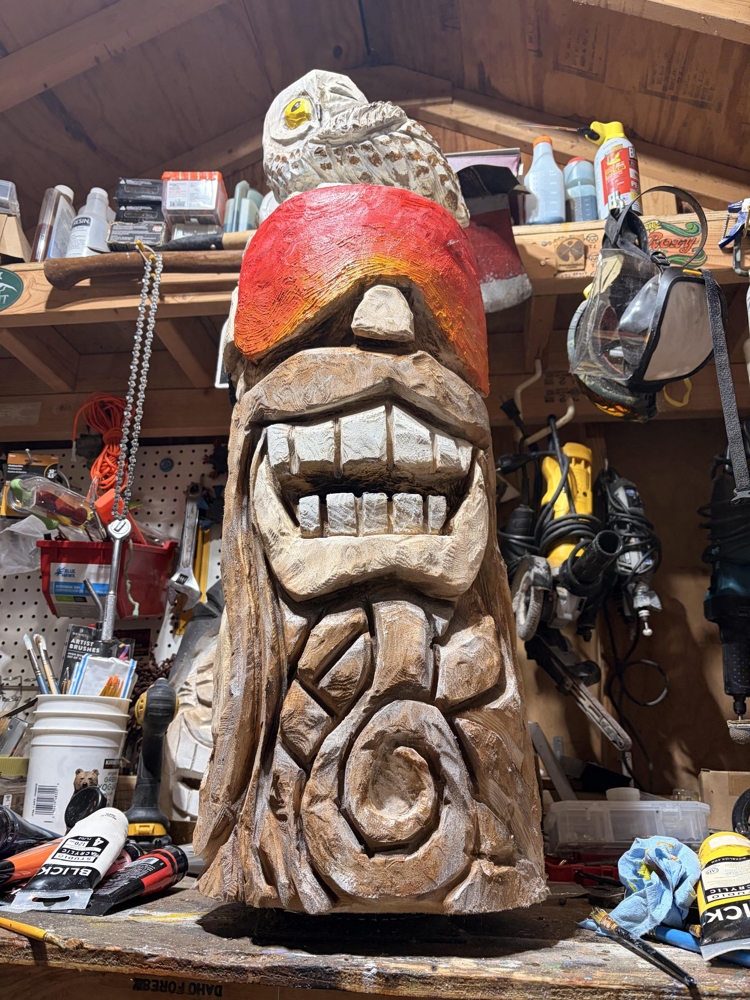
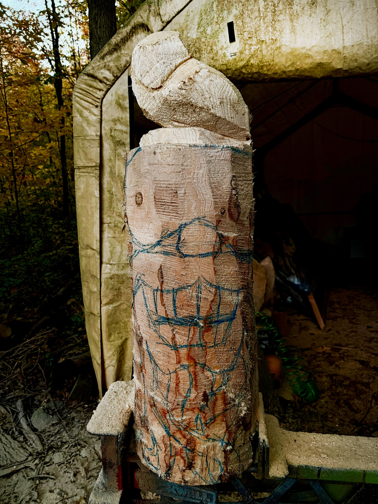
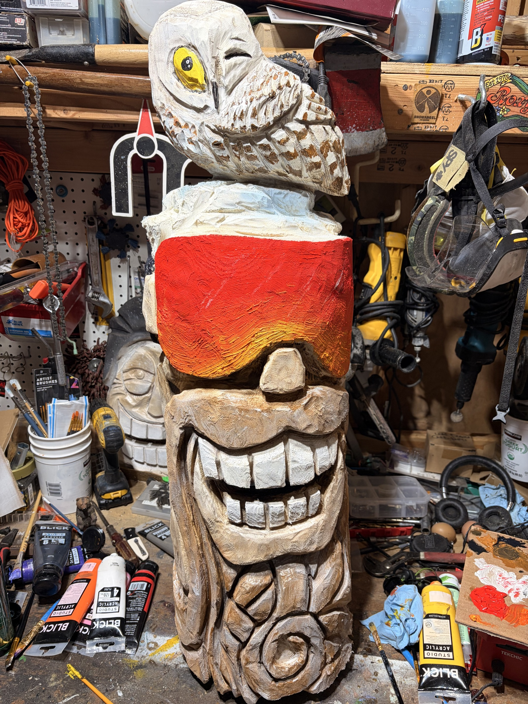

FIELD GUIDE

From log to lodge legend.
01 / PLAN

Secure the log. Think big shapes.
02 / ROUGH OUT
Chainsaw PPE • eye + ear protection
03 / CARVE
Big features first. Details next.
04 / REFINE
An owl up top. Texture below.
05 / TEXTURE
Before coatings • keep fire protection nearby
06 / CONTRAST
Let it cool. Brush off loose char.
07 / PAINT
White teeth. Red-to-gold goggles.
READY FOR APRÈS

For outdoor display: choose a compatible exterior finish.
A plain log. A big grin. And one very cool ski tiki.
Here's the process, from sketch to lodge legend.
Start with a stable, securely clamped log.
Sketch oversized goggles, a broad grin, and an owl on top.
Suit up with proper chainsaw protection.
Rough out the silhouette in stages, leaving extra wood around the details.
Define the nose, mouth, and teeth.
Work gradually: deep shadows make that grin read from across the room.
Shape the owl and add feather lines.
Refine the body pattern, checking the whole carving as you go.
Before any paint or finish, a light scorch brings out texture.
Work clear of combustibles, with fire protection nearby.
Let the wood cool, then brush away loose char.
Darken the recesses and wipe back the raised surfaces.
Paint the teeth bright white.
Then give those goggles a fiery red-to-gold fade.
Now it's looking ready for the slopes.
Choose a protective finish suited to where it'll live.
One log. One owl. Maximum après-ski attitude.